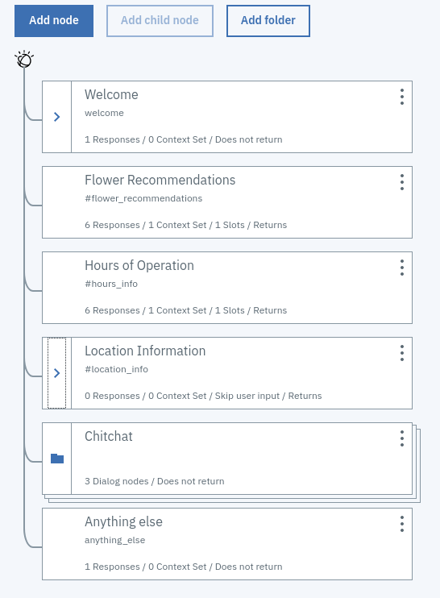
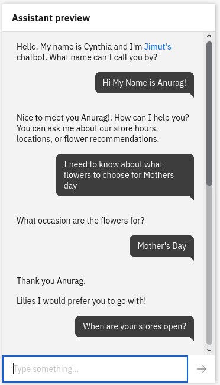
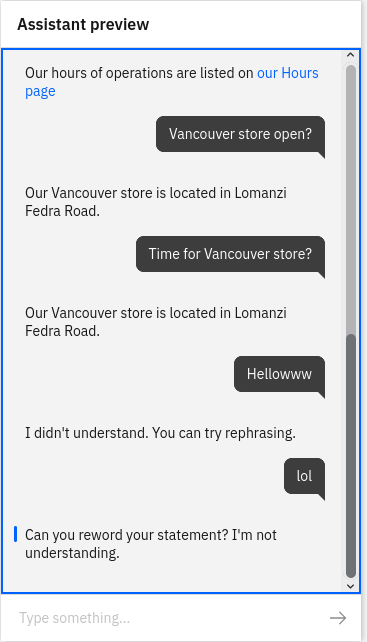
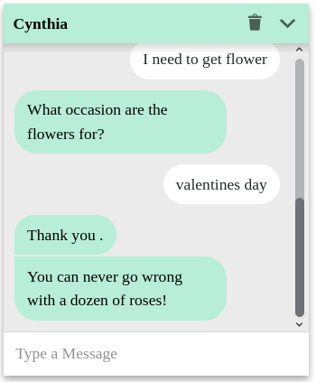
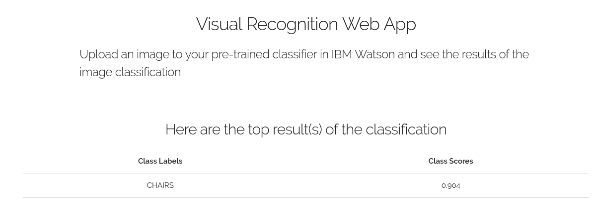

Working with IBM Watson
IBM Watson is the "state of the art" solution provider for AI. Watson caught the media and industry attention
when it played and won $77,147 (£47,812) in Jeopardy back in 2005, without connecting to any internet and just training on a plethora
of text knowledge base. It's Christmas time and I wanted to gift myself an AI,
just kidding, I am not iron man or stuff, learning NLP and training a model from scratch is a pain in the neck. I wanted something very
cool which can take very less effort and can make something which suits my need.
I started with IBM watson assistant and was surprised by the fact that almost any kind of assistant can be build without using any programming. Well, I am a programmer, and it did hurt my feelings (LOL). I am a little dissapointed that IBM is providing so much freedom to create almost anything for almost anyone without knowing the underlying bits and bytes of the architecture and principles in which the thing is to be designed. IBM is a pioneer in the field of machine learning and AI and has the top-notch R&D team in the world. They are the one who worked with speech recognition from an early age before anyone knew it existed. But it also have a downside, the learning curve for learning IBM studio can be very steep and sometimes careless mistakes may cause unneccessary results, and banging your head several times wouldnot solve your problem, but to try over and over again will. There are a very few bugs in the Watson cloud too, but they are minor, and mostly related to API errors. So lets see what I have build using IBM watson! My first creation was a very simple flower shop assistant. I learnt a lot about "entities", "intents", and "dialogues". Intents are keyowords that are associated to the watson assistant when we type or speak something in there. The intent specify the underlying meaning and the purpose of the statement which is produced to the assitant. They begins with # sign. Like for example #goodbye is an intent, and when we find any kind of sentence which is similar to that, then we may send appropriate replies. Entities are like particular queries that are related to some enities which has to produce very specific replies. Dialogues are mostly the flowchart of the decision which needs to be taken when you encounter something, as shown in Fig. 1 . I also learnt about context and digression. Context helps to memorize the needed context in a variable, upon which the follow up questions would be answered like humans by the robot. Digression is something similar to deviation, like for example say that if a person asks about something and the chatbot needs more information to answer the question, in that case the chatbot may question for follow up question to the users and so upon answering that question the chatbot will answer the user's question, it may so happen that the user doesn't answer the question and asks a different question, in that case of a digression, the chatbot will memorize that a unanswered questioned needs to be answered and so it will perform simultaneous ansewering of questions alongside asking for the necessary information everytime from the user.

Fig. 1: A layout of the dialogue flowchart using watson assistant
After working and designing the IBM watson assistant it's time to deploy! Here you can see the actual deployment of the watson in a wordpress site. A very minimalistic version of a flower shop assitant chatbot. It is said that Chatbots are becoming a need in the industry where the customer care staffs are just getting frustrated by the repition of the same question that they are being asked several times a day. The main fun thing about this chatbot is it will answer all your basic and silly queries about the flower shop as much as possible but when it comes to more difficult questions it will direct you straight to a "virtual employee" in case if your answer needs creativity to answer. The watson assistant has almost 10,000 api calls limit for one month when it comes to a default free plan but above that it will charge you some money. It is said that the industries are blooming and it is a cost effective method to apply something like a chatbot to your solutions since this will lead to saving of time, effort and money which the eployees can use in some creative tasks. The demo of trial in studio and wordpress deployment of the assistant is shown in Fig. 2 , Fig. 3 and Fig. 4 .

Fig. 2: A demo of the watson assistant in studio.

Fig. 3: Another demo of the watson assistant in studio.

Fig. 4: A demo of the watson assistant in wordpress site.
After all these hard work, it was time to celebrate! (Watson: We don't do that here). I created another application using Watson visual recognition and using all the tools provided by the deepbluemix. Here is the demo of that application , also shown in Fig. 5 . The purpose of the vision application is very simple, it detects furniture, i.e., table, chairs and beds. It doesn't return anything if you give some negative examples like a basketball court, or maybe a picture of animal.

Fig. 5: A demo of Watson vision application.
At last here is a bonus picture for you, Be happy, keep smiling, and happy learning!

Fig. 6: Some of the tricky images which even the humans find confusing to classify! LOL.
I started with IBM watson assistant and was surprised by the fact that almost any kind of assistant can be build without using any programming. Well, I am a programmer, and it did hurt my feelings (LOL). I am a little dissapointed that IBM is providing so much freedom to create almost anything for almost anyone without knowing the underlying bits and bytes of the architecture and principles in which the thing is to be designed. IBM is a pioneer in the field of machine learning and AI and has the top-notch R&D team in the world. They are the one who worked with speech recognition from an early age before anyone knew it existed. But it also have a downside, the learning curve for learning IBM studio can be very steep and sometimes careless mistakes may cause unneccessary results, and banging your head several times wouldnot solve your problem, but to try over and over again will. There are a very few bugs in the Watson cloud too, but they are minor, and mostly related to API errors. So lets see what I have build using IBM watson! My first creation was a very simple flower shop assistant. I learnt a lot about "entities", "intents", and "dialogues". Intents are keyowords that are associated to the watson assistant when we type or speak something in there. The intent specify the underlying meaning and the purpose of the statement which is produced to the assitant. They begins with # sign. Like for example #goodbye is an intent, and when we find any kind of sentence which is similar to that, then we may send appropriate replies. Entities are like particular queries that are related to some enities which has to produce very specific replies. Dialogues are mostly the flowchart of the decision which needs to be taken when you encounter something, as shown in Fig. 1 . I also learnt about context and digression. Context helps to memorize the needed context in a variable, upon which the follow up questions would be answered like humans by the robot. Digression is something similar to deviation, like for example say that if a person asks about something and the chatbot needs more information to answer the question, in that case the chatbot may question for follow up question to the users and so upon answering that question the chatbot will answer the user's question, it may so happen that the user doesn't answer the question and asks a different question, in that case of a digression, the chatbot will memorize that a unanswered questioned needs to be answered and so it will perform simultaneous ansewering of questions alongside asking for the necessary information everytime from the user.
After working and designing the IBM watson assistant it's time to deploy! Here you can see the actual deployment of the watson in a wordpress site. A very minimalistic version of a flower shop assitant chatbot. It is said that Chatbots are becoming a need in the industry where the customer care staffs are just getting frustrated by the repition of the same question that they are being asked several times a day. The main fun thing about this chatbot is it will answer all your basic and silly queries about the flower shop as much as possible but when it comes to more difficult questions it will direct you straight to a "virtual employee" in case if your answer needs creativity to answer. The watson assistant has almost 10,000 api calls limit for one month when it comes to a default free plan but above that it will charge you some money. It is said that the industries are blooming and it is a cost effective method to apply something like a chatbot to your solutions since this will lead to saving of time, effort and money which the eployees can use in some creative tasks. The demo of trial in studio and wordpress deployment of the assistant is shown in Fig. 2 , Fig. 3 and Fig. 4 .
After all these hard work, it was time to celebrate! (Watson: We don't do that here). I created another application using Watson visual recognition and using all the tools provided by the deepbluemix. Here is the demo of that application , also shown in Fig. 5 . The purpose of the vision application is very simple, it detects furniture, i.e., table, chairs and beds. It doesn't return anything if you give some negative examples like a basketball court, or maybe a picture of animal.
At last here is a bonus picture for you, Be happy, keep smiling, and happy learning!